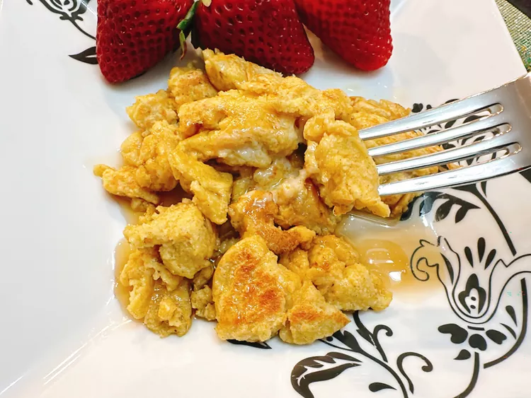

High Protein Scrambled Pancakes

Description
These high protein scrambled pancakes, made with oats instead of wheat flour, are scrambled in the pan, like scrambled eggs. Blend the batter in a Vitamix blender, dollop into a skillet, and scramble away. You’ll no longer struggle with round pancake perfectionism! Serve with butter and syrup, or a side of fresh berries.
Ingredients
- 2 large eggs
- 1/2 cup cottage cheese
- 1/2 cup rolled oats
- 1/4 cup vanilla protein shake
- 1/2 teaspoon baking powder
- 1/2 teaspoon ground cinnamon
- 1/2 teaspoon vanilla extract
- cooking spray
Steps
- Place eggs, cottage cheese, oats, protein shake, baking powder, cinnamon, and vanilla, in order, into the jar of a high-powered blender (such as a Vitamix®). Blend until smooth.
- Heat a nonstick skillet over medium heat and lightly coat with cooking spray.
- Pour batter into small pancakes. Before the batter begins to set, push the batter around to scramble the pancakes. Flip and fluff the pancakes, and cook until they acquire some golden color in places, 3 to 5 minutes.
Home